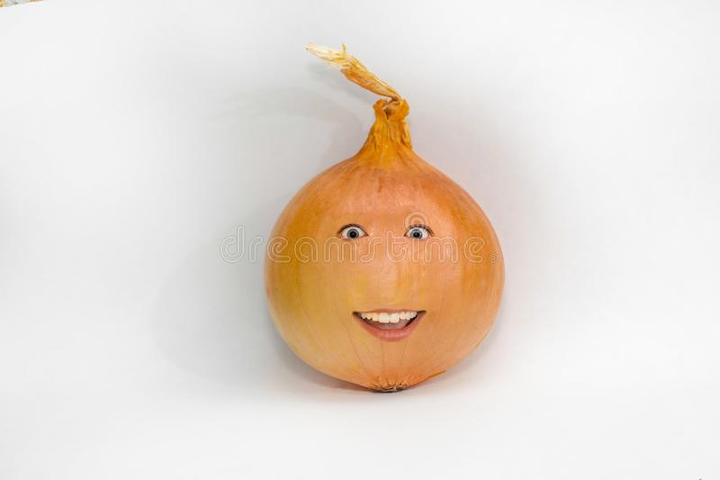

Humanoid Onion Companion

This recipe will save you a lot of time and frustration
You should make this recipe if you want a kitchen helper who can help you with instructions
Ingredients
- Onion
- Love
- Spells & Magic
- Pot
Steps
- locate a suitable onion
- Get a spellbook from your local wizardry supply store
- Follow the instructions in the book
- Become friends with the humanoid onion
- Lastly... Enjoy never having to read cooking instructions again